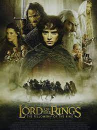
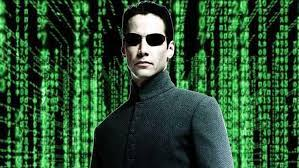

Biletixx
En uygun biletler burada !!
EN UCUZ BİLET BU SİTEDE!!
Sevgili sinema sever, Aşağıda gündemde olan filmlerimiz bulunmaktadır. Filmlerin detaylarına oradan bakabilirsiniz.Bilet satın almak için linke tıklayınız :)
Bilet Satın almak için tıklayınız..Harry Potter

Harry Potter, İngiliz yazar J. K. Rowling tarafından yazılmış yedi fantastik romandan oluşan bir seridir. Romanlar, Hogwarts Cadılık ve Büyücülük Okulu'nda eğitim gören genç büyücü Harry Potter ile arkadaşları Hermione Granger ve Ron Weasley'nin yaşamlarını konu alır. Ana hikaye Harry'nin karanlık bir büyücü olan Lord Voldemort'un ölümsüz olmayı, Sihir Bakanlığı olarak bilinen büyücü yönetim kurulunu devirmeyi ve tüm büyücüleri ve Muggle'ları (büyülü olmayan insanlar) boyun eğdirmeye çalışması ve buna karşı bir hayat mücadelesi vermesidir. Serinin ilk romanı Harry Potter ve Felsefe Taşı'nın 26 Haziran 1997'de yayımlanmasından bu yana kitaplar dünya çapında büyük bir popülerlik ve ticari başarı elde etti. Eleştirmenlerden olumlu eleştiriler alan kitaplar, çocukların yanı sıra geniş bir yetişkin kitlenin de ilgisini çekti ve genç yetişkin edebiyatının temel taşlarından biri olarak kabul gördü.[1] Şubat 2018 itibarıyla 80 dile çevrilerek dünya genelinde 500 milyondan fazla satan seri, tarihin en çok satan kitap serisi hâline geldi.[2] Serinin son dört kitabı arka arkaya tarihin en hızlı satan kitabı rekorunu kırdı. Son kitap, piyasaya çıktığı ilk 24 saat içinde ABD'de yaklaşık 11 milyon kopya sattı.
Yüzüklerin Efendisi
Yüzüklerin Efendisi: Yüzük Kardeşliği (İngilizce: The Lord of the Rings: The Fellowship of the Ring), Peter Jackson'ın yönettiği Yüzüklerin Efendisi üçlemesinin birinci filmidir ve 2001 yılında gösterime girmiştir. J. R. R. Tolkien'in aynı adlı fantezi roman üçlemesinin birinci kitabından uyarlanmış olan film, üçlemenin sırasıyla diğer iki filmi olan İki Kule ve Kralın Dönüşü filmleri ile eş zamanlı olarak, Yeni Zelanda'da çekilmiştir. Birleşik bütçeleri yaklaşık 270 milyon $ olan filmlerin çekimleri 15 ay, çekim sonrası aşamaları da yaklaşık bir yıl sürmüştür. Yüzüklerin Efendisi: Yüzük Kardeşliği ABD'de 313.364.114 $, uluslararası olarak 556.592.194 $ hasılat ile toplam kazancı 871.368.364 $'a ulaşmıştır. Film ABD'de gösterime girdiği ilk hafta 47.211.490 $ gelir elde etmiştir.[2]
Matrix
Saygın bir yazılım şirketinde çalışan Thomas Anderson (Keanu Reeves), gecelerini "Neo" adı altında program kırarak ve Matrix'i araştırarak geçirir. Esrarengiz şekilde Trinity ve Morpheus ile tanışan Neo, yaşadığı dünyanın aslında beyninde gerçekleşen bir simülasyondan ibaret olduğunu öğrenir ve kendini bu durumdan kurtarmak için Morpheus'un önderliğindeki ekibe katılır. Neo gerçek dünyada ilk nefesini aldıktan sonra simülasyona tekrar girerek Matrix'in ne olduğunu kavrayacak ve kurtarılma nedenini öğrenerek gelişen olaylar çerçevesinde yeni kimliğini tanımaya çalışacaktır. Filmdeki olaylar çok ileri bir tarihte teknolojinin son derece gelişmiş olduğu, yapay zekaya sahip makinelerin yaratılmış olduğu bir dünyada geçmektedir. Bu dünyada makineler ve insanlar arasında ortaya çıkmış, savaş sonucunda insan ırkı makineleri yenebilmek için onların enerji kaynağı olan güneş ışınlarının dünyaya inmesini engellemek adına, gökyüzünü kimyasal silahlarla siyah bulutlar oluşturmak suretiyle kapatmıştır. Bunun sonucunda enerji ihtiyacını karşılayamayan makineler yeni enerji kaynakları bulmaya yönelir ve insan vücudunun çok iyi bir enerji motoru olduğunu fark ederler.